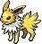

-
bulbasaur #001

- Grama
- Veneno
Há uma semente de planta em suas costas desde o dia que este pokemón nasce. A semente cresce lentamente.
-
ivysaur #002

- Grama
- Veneno
Quando o bulbo em suas costas cresce, parece perder a capacidade de ficar de pé em suas patas traseiras.
-
venusaur #003

- Grama
- Veneno
Sua planta floresce quando esta absorvendo energia solar. Ele permanece em movimento para buscar a luz solar.
-
charmander #004

- Fogo
Tem preferencia por coisa quentes. quando chove, diz-se que o vapor jorra da ponta de sua cauda.
-
charmeleon #005

- Fogo
Tem uma natureza bárbara. Na batalha, ele chicoteia sua cauda ardente e corta com garras afiadas.
-
charizard #006

- Fogo
- Voador
Ele cospe fogo que é quente o suficiente para derreter pedregulhos. Pode causar incêndios florestais soprando chamas.
-
squirtle #007

- Água
Quando ele retrai seu longo pescoço em sua concha, ele esguicha água com força vigorosa.
-
wartortle #008

- Água
É reconhecido como um símbolo de longevidade. Se sua concha tem algas, esse wartortle é muito antigo.
-
blastoise #009

- Água
Ele esmaga seu inimigo sob seu corpo pesado para causar desmaios. Em uma pitada, ele se retirará dentro de sua concha.
-
caterpie #010

- Inseto
Para porteção ele libera um fedor horrível da antena em sua cabeça para afastar os inimigos.
-
gengar #011

- Sombrio
De vez em quando, em noites bem escuras, a sua sombra vai crescer, ficar disforme e te passar. Isso na verdade é Gengar passando por você, fingindo ser sua sombra.
-
togepi #012
- Fada
A concha parece estar cheia de alegria. Diz-se que compartilhará boa sorte quando for tratado com gentileza. Amor te amo <3
-
Pikachu #013

- Elétrico
Se você se deparar com um fruto torrado, é uma evidência de que esse Pokémon errou na intensidade de energia de sua descarga elétrica.
-
Mew #014

- Mew
Como é capaz de aprender qualquer tipo de golpe, muitos cientistas acreditam que ele é o antepassado de todos os pokémons. Este pokémon não possui evolução.
-
Mewtwo #015

- Mewtwo
Mewtwo é um Pokémon que foi criado por manipulação genéticado do Mew. No entanto, apesar de o poder científico dos seres humanos criado o corpo deste Pokémon, eles não conseguiram dotar Mewtwo com um coração compassivo.
-
Jigglypuff #016

- Fada
Este Pokémon usa sua habilidade de cantar precisamente em determinadas frequências para deixar seus adversários tontos, as vezes até em sono profundo.
-
Eevee #017

- Normal
Eevee tem uma composição genética instável que, de repente se transforma devido ao ambiente em que vive. Radiação de várias pedras faz com que esse Pokémon evolua.
-
Vaporeon #018

- Água
Vaporeon sofreu uma mutação espontânea e cultivou barbatanas e brânquias que lhe permitem viver debaixo d'água. Este Pokémon tem capacidade de controlar livremente a água.
-
Flareon #019

- Fogo
O pelo macio do Flareon tem um objetivo funcional, liberar calor no ar para que seu corpo não fique excessivamente quente. Quando pega presas ou encontra berrys, sopra fogo nelas até que estejam bem cozidas e as engole.
-
Jolteon #020
- Elétrico
O pelo eriçado é feito de agulhas carregdas com eltricidade. Um Pokémon sensível que facilmente fica triste ou com raiva. Toda vez que seu humor muda, ele cobra energia.